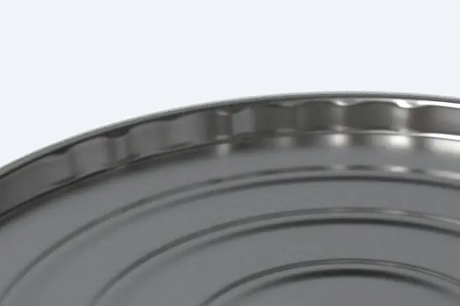
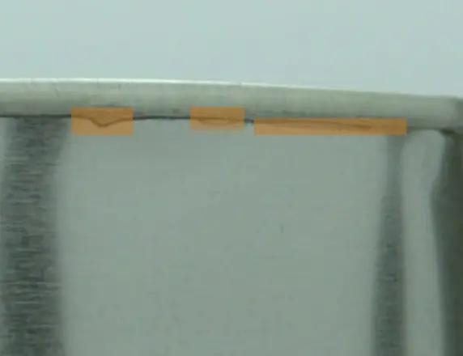

Cada envase, en todo su perímetro
Defectos y abolladuras en el metal o el doble cierre, litografía impresa, etiquetas y marcajes de lote, caducidad y código de barras.

Cierre correcto

Falso cierre

Fallo de la segunda carretilla

Pico

Fallo de pestaña inferior

Fallo del plato mandril

Abolladuras en el metal

Defectos en el cierre

Lectura de lote y caducidad
- Errores en la litografía impresa
- Etiquetas ausentes o mal colocadas
- Lectura de códigos de barras
- Envases de cualquier forma